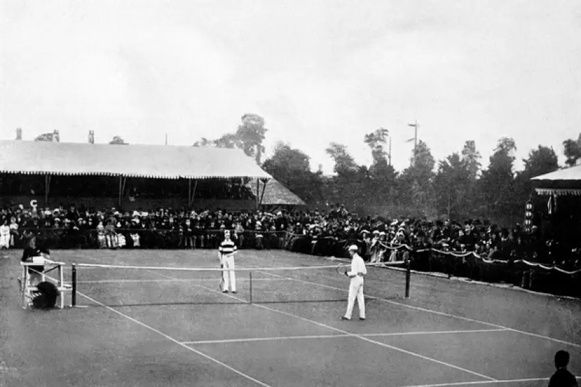
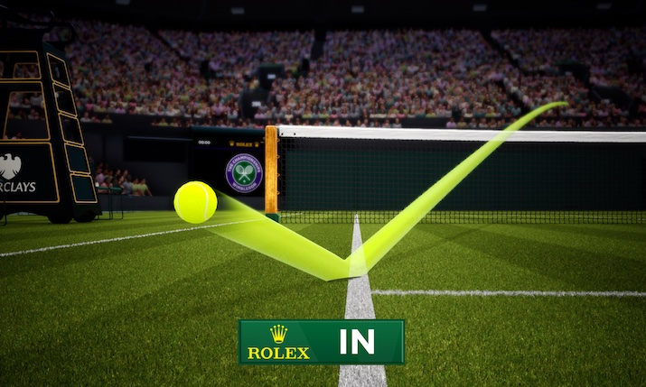
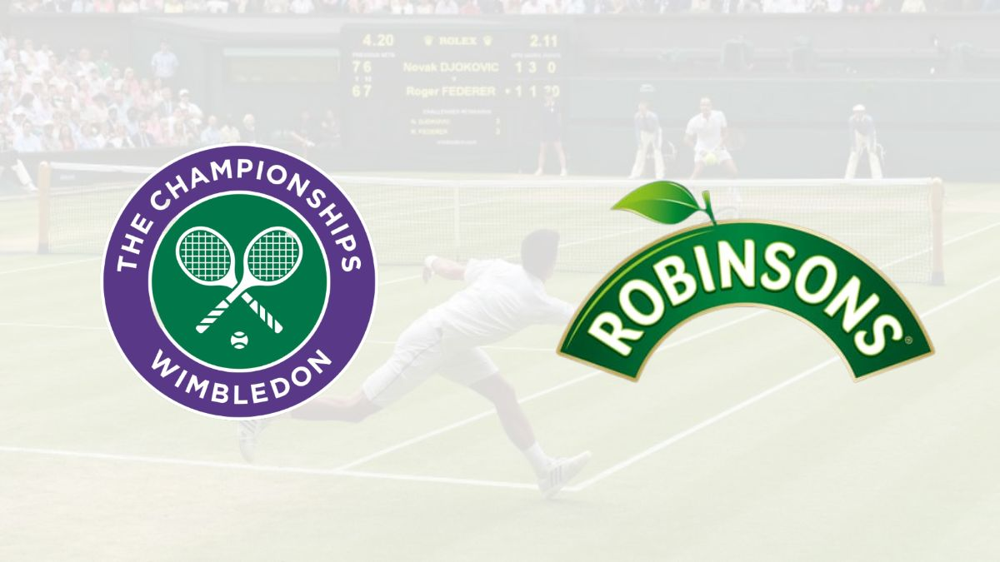
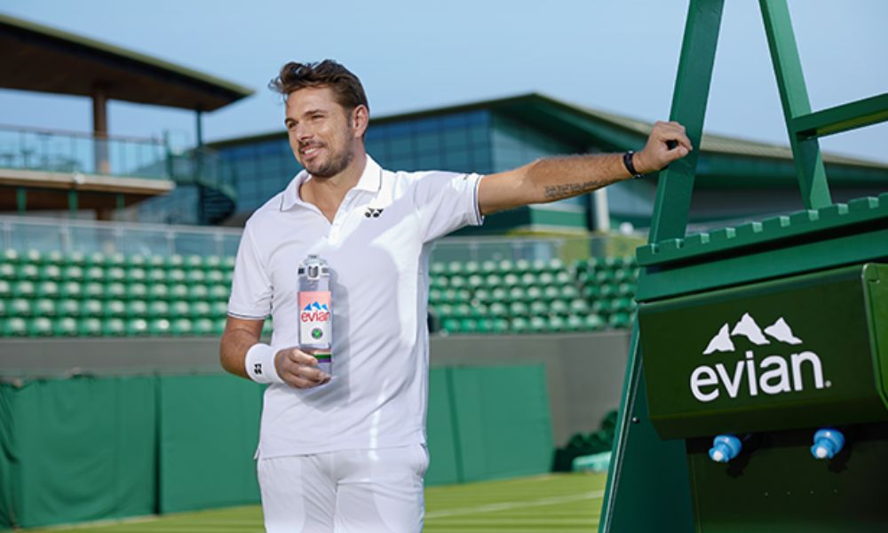

Története
1877 - 1914
Wimbledon, mint a legrégebbi és legelismertebb tenisztorna, 1877-ben indult útjára a londoni All England Croquet and Lawn Tennis Club szervezésében. Az első versenyt 22 játékos részvételével rendezték meg a klub Worple Road-i pályáin, és mindössze a férfi egyéni versenyszámot tartották meg, amelyet Spencer Gore nyert meg. A torna kezdeti éveiben a tenisz szabályai és a felszerelések még kialakulóban voltak, és az 1900-as évek elejére vált egyre népszerűbbé és elterjedtebbé a sportág. 1884-ben bevezették a női egyéni versenyszámot, amelyet Maud Watson nyert meg, ezzel kibővítve a torna jelentőségét. A századfordulóra Wimbledon már nemcsak Angliában, hanem nemzetközi szinten is ismerté vált.

Kép az első Wimbledoni tornáról
1914 - 1968
A két világháború közötti időszakban Wimbledon jelentősége tovább nőtt, azonban az első világháború alatt (1915-1918) szüneteltették a versenyt. Az 1920-as években a torna presztízse újabb szintre emelkedett, különösen olyan ikonikus játékosok révén, mint Suzanne Lenglen és Bill Tilden, akik világszerte népszerűsítették a teniszt. A második világháború alatt (1940-1945) szintén nem rendezték meg a tornát, de a háború utáni években Wimbledon visszatért, és a brit kultúra szerves részévé vált. 1968-ban jelentős változás történt, amikor beköszöntött az "Open Era", vagyis minden profi és amatőr játékos számára megnyitották a versenyt. Ez a döntés növelte a torna versenyzőinek minőségét és a közönség érdeklődését, miközben világszínvonalú mérkőzéseket eredményezett.

1968 - napjainkig
Az Open Era kezdete óta Wimbledon folyamatosan alkalmazkodik a változó igényekhez és kihívásokhoz, miközben megőrzi tradicionális elemeit, mint például a fehér öltözet követelménye és a füves pályaborítás. Az 1980-as években olyan legendás összecsapásokra került sor, mint Björn Borg és John McEnroe rivalizálása, míg az 1990-es évektől napjainkig Roger Federer, Rafael Nadal és Novak Djokovic dominanciája alakította a tenisztörténelmet. 2009-ben a Center Courtot kiegészítették egy behúzható tetővel, hogy az esős időjárás se akadályozza a mérkőzések lejátszását. Az évek során a torna a technológiai fejlődést is figyelembe vette, például bevezették a Hawk-Eye rendszert a pontosabb döntések érdekében. Wimbledon a mai napig a legnagyobb presztízzsel rendelkező Grand Slam torna, és évente több millió néző figyeli az eseményeket a világ minden tájáról.

Kép a Hawk-Eye figyelő renszerről
Szponzorok
Wimbledon fő szponzorai kulcsszerepet játszanak abban, hogy a torna a világ egyik legelismertebb és legnívósabb sporteseménye maradjon, miközben anyagi támogatásuk mellett technológiai újításokkal, logisztikai megoldásokkal és egyedi szolgáltatásokkal is hozzájárulnak a rendezvény sikeréhez. A Rolex 1978 óta a verseny hivatalos időmérő partnere, és nemcsak a precíz időmérés biztosításában játszik fontos szerepet, hanem a torna eleganciájának és tradícióinak megtestesítője is, amely erősíti Wimbledon exkluzivitását. Az IBM technológiai szakértelme forradalmasította a mérkőzések követésének módját, hiszen fejlett adatkezelési megoldásaival és valós idejű statisztikai elemzéseivel lehetővé tette a nézők számára, hogy mélyebb betekintést nyerjenek a játék dinamikájába, akár a helyszínen, akár otthonról. Az ital- és élelmiszer-szponzorok, mint a Robinsons és az evian, a frissítők és ellátmányok biztosításával garantálják a játékosok, a személyzet és a nézők kényelmét. Emellett a Jaguar Land Rover, mint hivatalos autószállító partner, a játékosok és a VIP vendégek közlekedését biztosítja, erősítve a luxus és a professzionális kiszolgálás érzését. Ezek a szponzorok nemcsak financiális stabilitást nyújtanak a tornának, hanem aktív hozzájárulásukkal segítenek fenntartani Wimbledon hagyományait, miközben a modern elvárásokhoz is alkalmazkodnak, így téve a tornát globálisan elismertté és minden évben izgatottan várt eseménnyé.


Kép Wimbledon, a Robinsons és az Evian logójáról